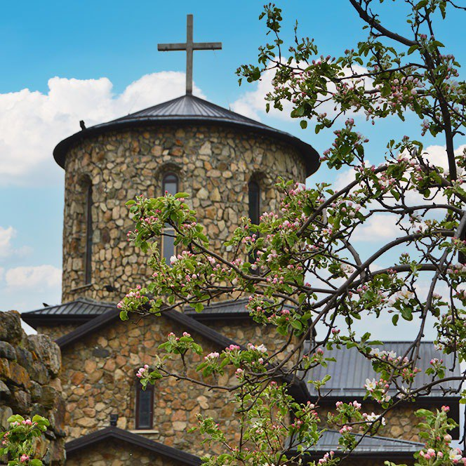

Мужской монастырь
Самая высокогорная православная обитель на территории России. Монастырь был создан 19 апреля 2000 года в Беслане в бывшей гостинице для машинистов поездов.

Лавочка счастья
Это место представляет собой завораживающую панораму заснеженных вершин Главного Кавказского хребта, а внизу слева виднеется река Фиагдон и поселок Верхний Фиагдон.

Уастырджи
Уастырджи имел волшебную силу, мог воскрешать умерших и даже принимать самый разный облик. Согласно сказаниям Уастырджи имел двух жен.

Святилище Реком
Одно из древнейших и самое почитаемое в Северной Осетии святилище, расположенное близ Цея, на высоте около 3 км над уровнем моря — это святилище Реком.